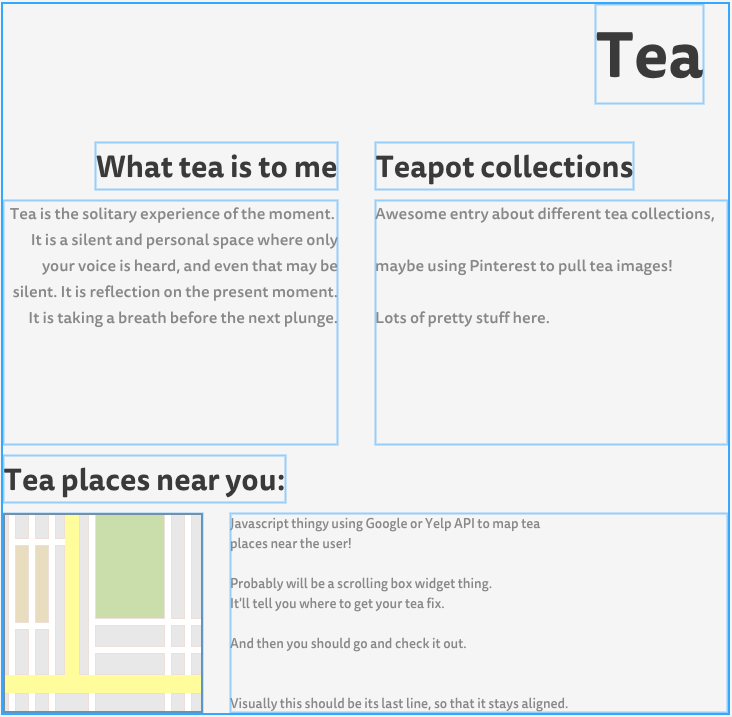

Tea site mockup
February 17, 2016
I'm currently in Week 2 of Dev Bootcamp, and this week focuses on HTML and design basics. We were introduced to HTML, wireframing, choosing design elements such as fonts and palattes, and so on. I thought I'd concretise some of these concepts for myself by making a mockup of a site I'd like to try building at some point, a simple site about tea.
It should feature a variety of media, including Google or Yelp API for suggesting nearby tea places to the user; a Pinterest API (is there such a thing?) to pull Pinterest tea boards for the user; and some blog posts about tea.

The layout should be very simple: a mildly transparent scrolling middle section over a lovely tea-centric background.
Some potential backgrounds:


At some point I'll have the knowledge I need to build this awesome little site. I'm looking forward to it. In the meantime, I'm going to make another cup of tea.